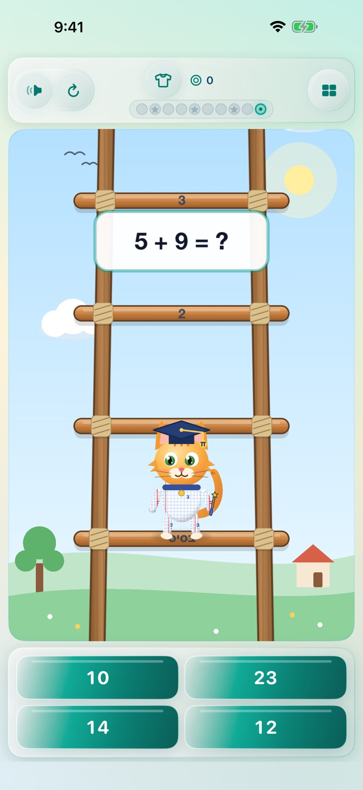

משחק חשבון לילדים · iPhone ו־iPad
סולם החשבון
פותרים תרגיל, מטפסים עוד שלב בסולם, מנצחים בוסים ואוספים כוכבים.

- 50 שלבים: חיבור, חיסור, כפל, חילוק ופעולות מעורבות, בקושי שעולה בהדרגה.
- בוס חביב בסוף כל שלב, ותרגול חיזוק לשאלות שהיו קשות.
- דמויות ומלתחה: בדים, כובעים ותחפושות שמרוויחים במשחק.
- בלי פרסומות, וגם בלי חיבור לרשת.
מנוי חודשי פותח את כל 50 השלבים. המחיר מוצג באפליקציה לפי חשבון ה־Apple שלכם.